Арка 1
СкороКОМИКС
Главы
Вертикальный формат чтения, созданный для телефона.
← К списку главАрка 1: Глава 1
ПРОЛОГ
Тишина перед выбором
Здесь будет первый кадр твоего комикса.
Изображения главы можно будет добавить позже.
Формат уже настроен под длинную вертикальную прокрутку.
ВСЕЛЕННАЯ
Персонажи
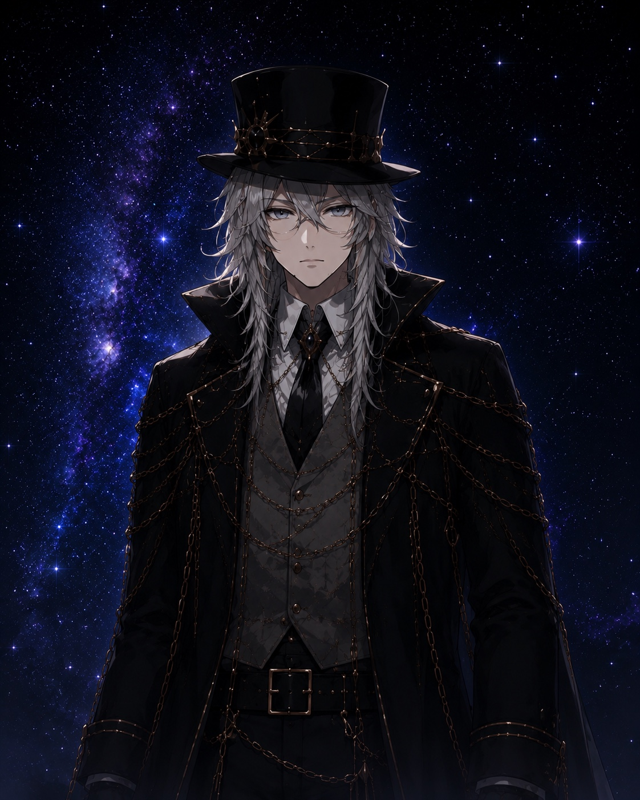
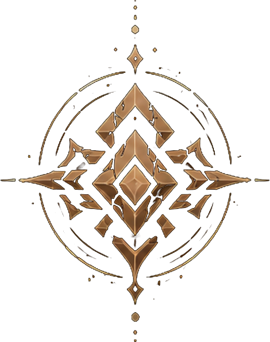
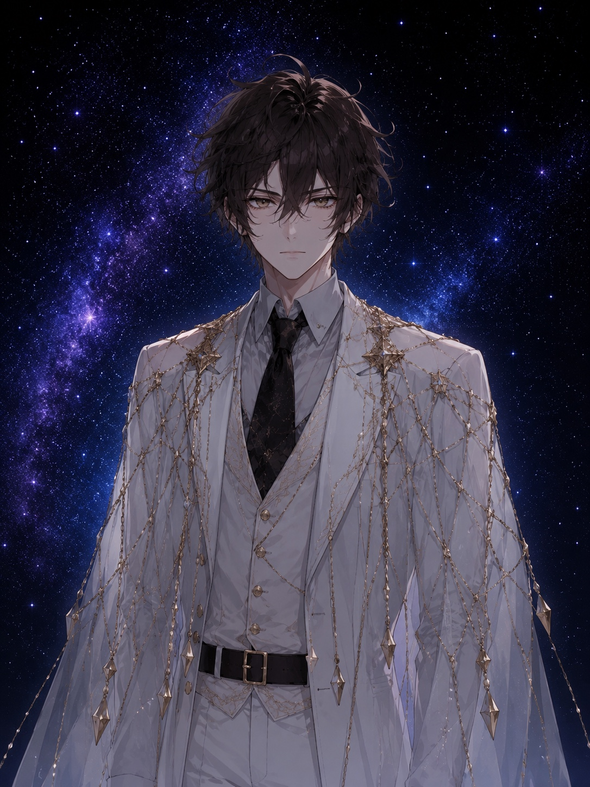
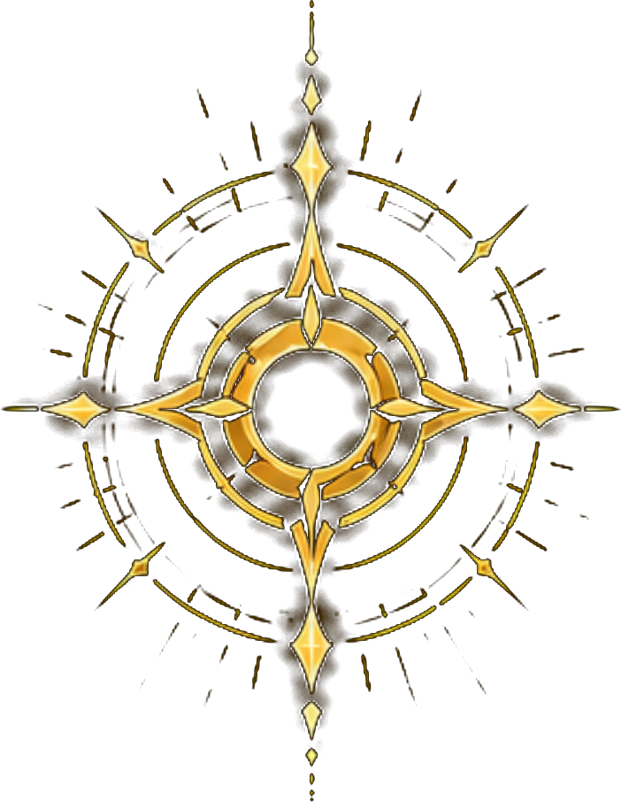
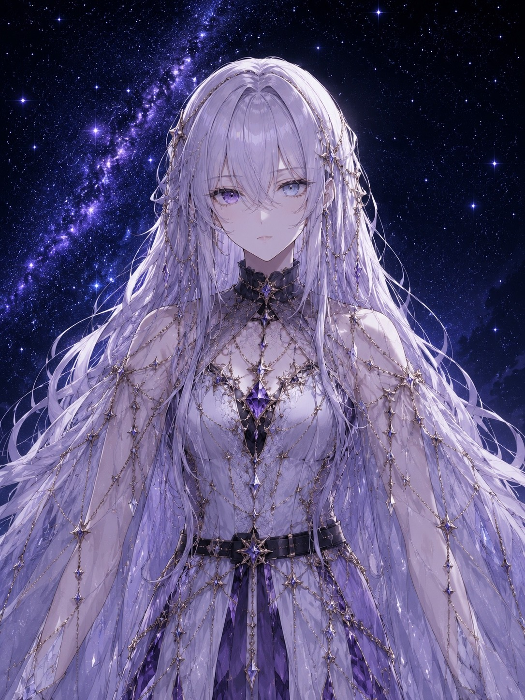
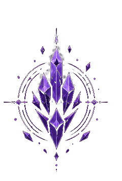
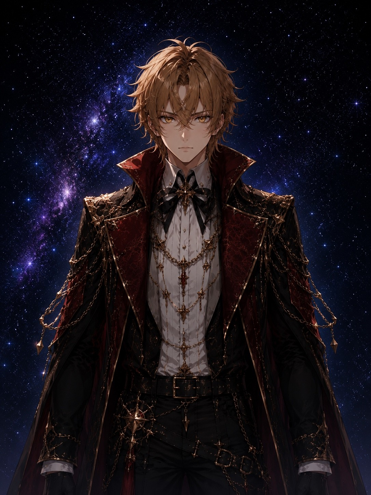
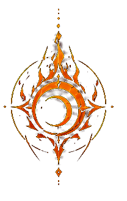
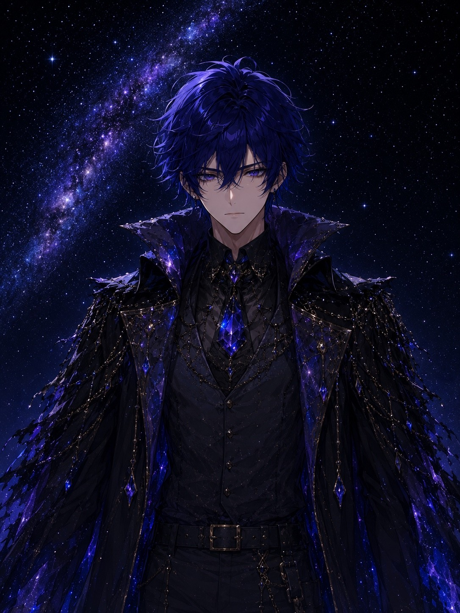
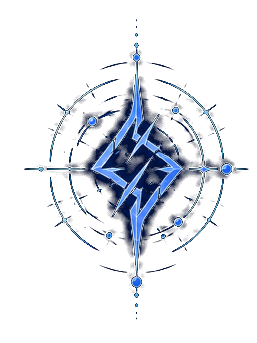
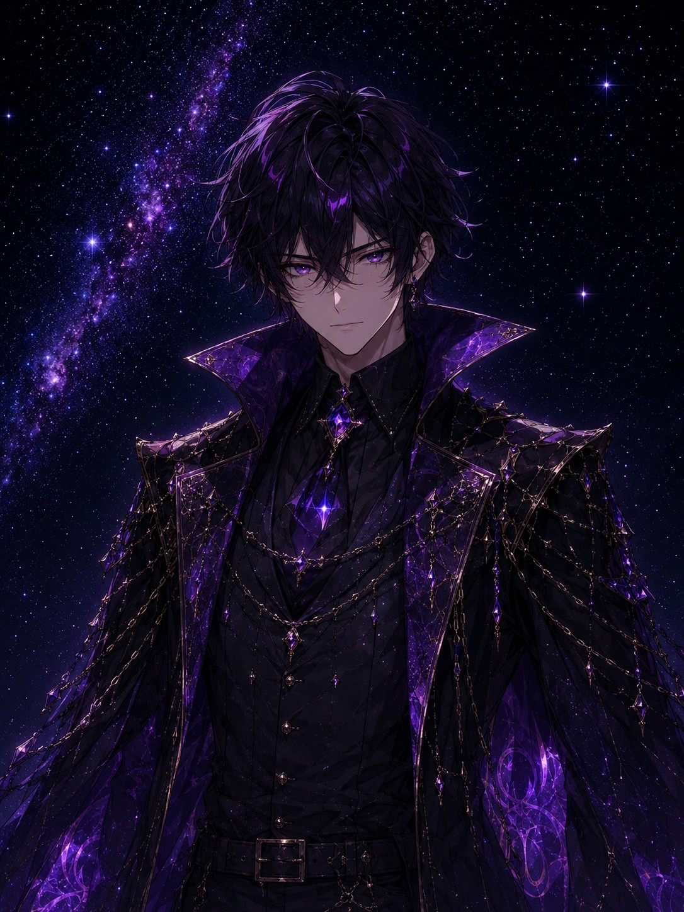
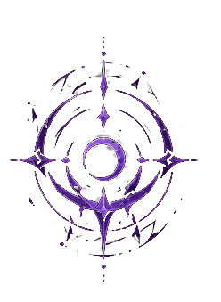
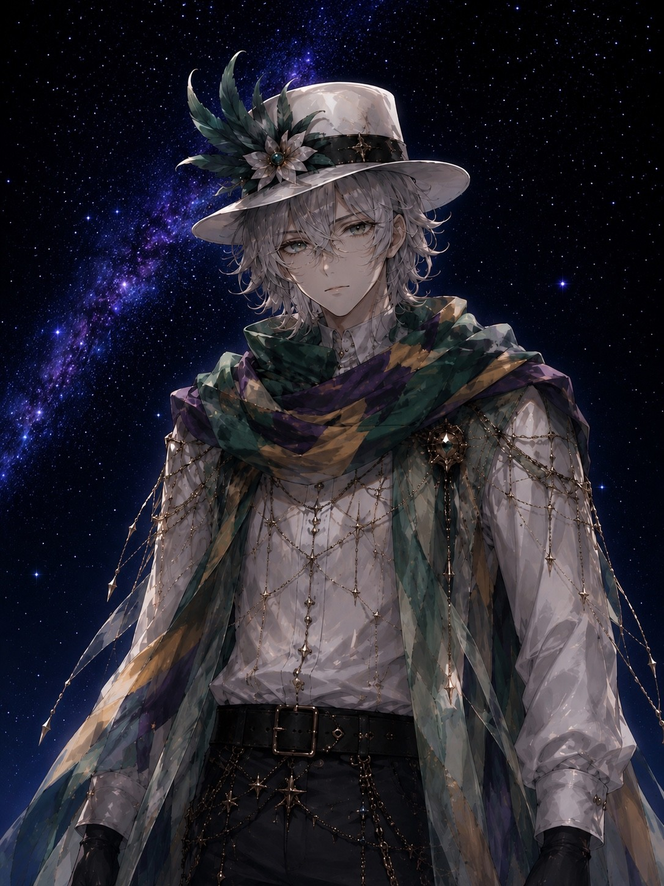
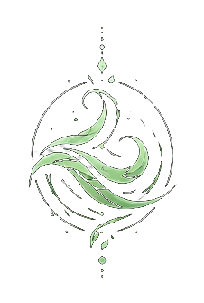
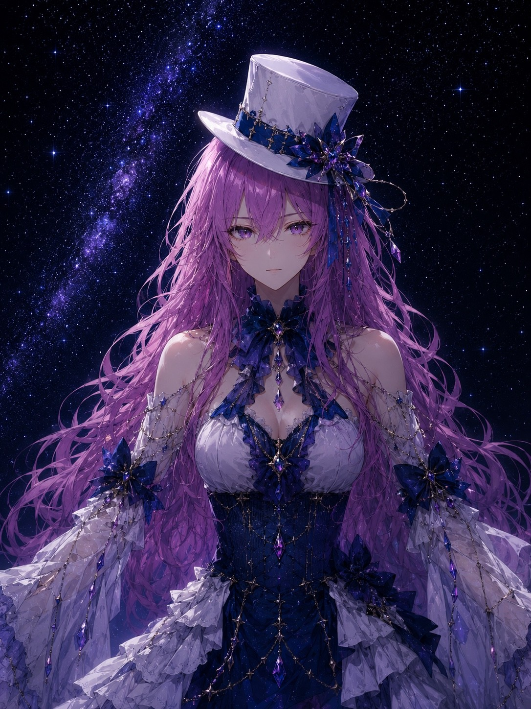
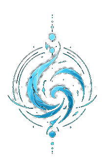
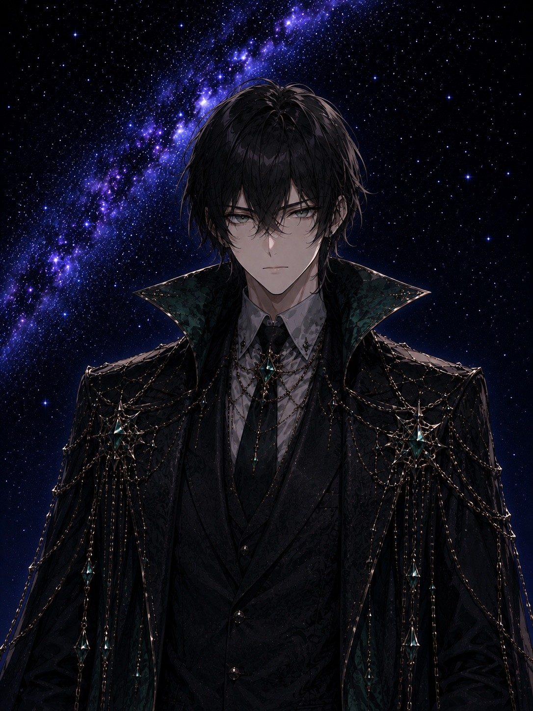
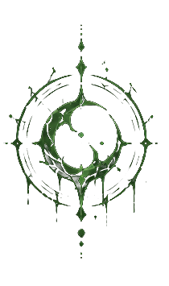
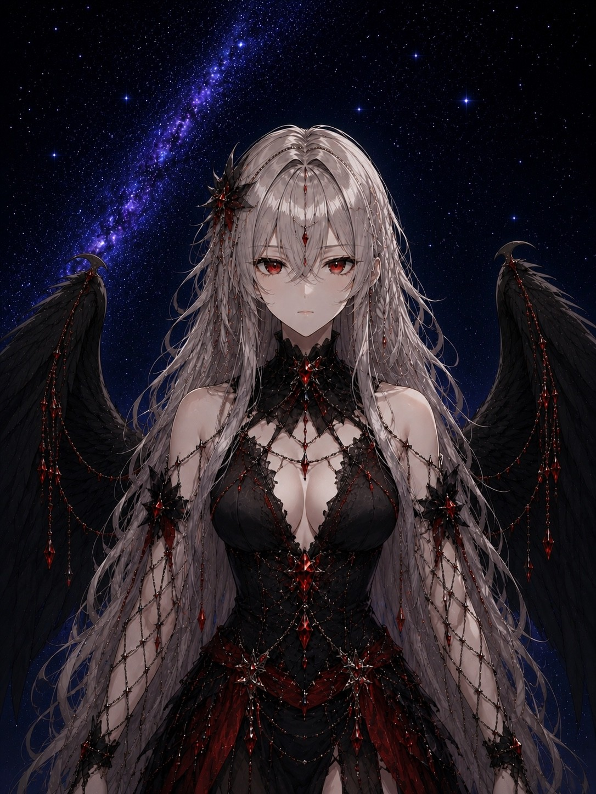
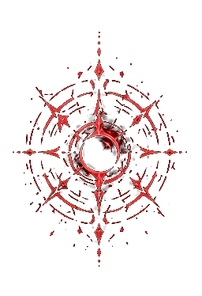
ПЕРСОНАЖГагафон
ИСТОРИЯ ← Назад к героям
Гагафон
Пойсонт
Последний Оплот
ВОЗРАСТ26 лет
ДАТА РОЖДЕНИЯ1 января
ЭЛЕМЕНТСтоймайтен
Класс: Земля
Гагафон вырос в семье, где детство закончилось слишком рано. Его отец ушёл, когда он был ребёнком, а мать стала зависимой от алкоголя, теряя себя. Единственным человеком, подарившим ему заботу и чувство дома, стала бабушка, воспитавшая его среди цветов и деревьев сада.
С ранних лет Гагафон привык рассчитывать только на себя. Он редко говорит о своих переживаниях и помогает другим, даже если сам несёт тяжёлую ношу. За его спокойствием скрывается человек, который знает цену семье, доверию и потерям.
ПЕРСОНАЖГенрих
ИСТОРИЯ ← Назад к героям
Генрих
Зонненшайн
Пилигрим
ВОЗРАСТ31 год
ДАТА РОЖДЕНИЯ2 февраля
ЭЛЕМЕНТВита
Класс: Свет
Генриха нашли младенцем у стен монастыря. Не зная, кто оставил его и почему, монахи приняли ребёнка и воспитали его как своего.
С ранних лет Генрих изучал не только учения монахов, но и мир вокруг. Он покидал стены монастыря, встречал людей и видел жизнь за пределами спокойствия. Этот опыт позволил ему сохранить мудрость и понимание людей.
Годы дисциплины и наблюдения сформировали в нём человека, умеющего сохранять спокойствие там, где другие теряют себя. Генрих не стремится изменить мир силой — он верит, что настоящие перемены начинаются с понимания.
В 24 года Генрих узнал, что среди монахов, воспитавших его, были его родители. Услышав правду, он не злился — он принял их выбор, доказав, что уроки, которым его учили с детства, стали частью его самого.
Став Пилигримом, он продолжает путь, следуя принципам, которым посвятил всю жизнь.
ПЕРСОНАЖИбаз
ИСТОРИЯ ← Назад к героям
Ибаз
Роузент
Циркачка
ВОЗРАСТ20 лет
ДАТА РОЖДЕНИЯ3 марта
ЭЛЕМЕНТЛюцерис
Класс: Кристалл
Ибаз — это сочетание красоты и уродства в одном человеке. С одной стороны, её фарфоровая внешность и волосы цвета фиолетового кристалла создают образ невероятной красоты. С другой стороны, её разноцветные глаза и четыре пальца на правой руке делают её внешность необычной и для многих людей — пугающей.
С детства Ибаз мечтала стать актрисой, но после прослушивания ей предложили попробовать себя в цирке. Именно там она нашла своё место и превратила свою необычность в часть сценического образа.
11 месяцев назад Ибаз потеряла своих родителей в аварии. Несмотря на эту потерю, она продолжила выступать и сохранять улыбку перед зрителями.
Ибаз коллекционирует старые театральные маски, потому что когда-то мечтала играть чужие роли на сцене.
ПЕРСОНАЖЛуи
ИСТОРИЯ ← Назад к героям
Луи
Вандом
Глашатай Немезиды
ВОЗРАСТ24 года
ДАТА РОЖДЕНИЯ4 апреля
ЭЛЕМЕНТКёстерра
Класс: Огонь
В детстве Луи был ребёнком, который постоянно на что-то злился и обижался. Из-за этого его родители часто смеялись, ведь даже с сердитым лицом он выглядел слишком мило.
Потом мама уволилась с работы. С тех пор она всё чаще оставалась дома. Иногда на недели, иногда на месяцы исчезала в больнице. Она постоянно кашляла, но Луи никогда не спрашивал, чем она болеет. Тогда ему казалось, что это неважно. Когда она возвращалась домой, всё снова становилось как раньше. Они смотрели на звёзды, играли в настольные игры и проводили вечера вместе.
Это была самая обычная ночь. Луи проснулся от звука разбившейся посуды. Когда он вышел на кухню, то увидел мать, сидящую у стены, и отца, который всё ещё держал нож, вонзённый ей в шею.
А дальше всё как в тумане: звонок, арест отца, похороны, переезд к тёте.
ПЕРСОНАЖЛагара
ИСТОРИЯ ← Назад к героям
Лагара
Волтер
Праздный хранитель
ВОЗРАСТ23 года
ДАТА РОЖДЕНИЯ5 мая
ЭЛЕМЕНТАполонний
Класс: Молния
Лагара вырос в семье, наполненной творчеством и необычными идеями. Его отец был поэтом, а мать создавала уникальные блюда, превращая обычные вещи в нечто новое.
Но сам Лагара всегда отличался от семьи. Пока окружающие стремились создавать и искать новое, он предпочитал спокойную жизнь без больших целей. Каждый день был похож на предыдущий, и его устраивало существование без планов на будущее.
Лагара не пытался выделиться среди других и не считал себя человеком, способным изменить что-либо вокруг. Его спокойствие часто принимали за безразличие, а отсутствие амбиций — за отсутствие возможностей.
Лагара перенял от матери любовь к готовке. Для него создание блюд стало способом выражать себя.
ПЕРСОНАЖСергей
ИСТОРИЯ ← Назад к героям
Сергей
Бовгарт
Блудный праведник
ВОЗРАСТ27 лет
ДАТА РОЖДЕНИЯ8 августа
ЭЛЕМЕНТФариста
Класс: Тьма
С самого детства жизнь Сергея принадлежала не ему. Родители заранее решили, кем он станет в будущем. Кружки, секции — каждый день был расписан до мелочей. Они видели в нём будущего следователя и старались сделать из него идеального сына.
Но Сергей никогда не чувствовал, что это его выбор. В день своего совершеннолетия он ушёл из дома, оставив позади жизнь, которую для него построили другие.
Оказавшись один, без поддержки и средств, Сергей два года работал в эскорте, пытаясь просто выжить.
К 21 году он смог начать всё заново. Самое болезненное для Сергея было осознать, что спустя годы он всё-таки пришёл к тому, кем родители хотели его видеть.
ПЕРСОНАЖЙоли
ИСТОРИЯ ← Назад к героям
Йоли
Мириан
Дитя малого ветра
ВОЗРАСТ17 лет
ДАТА РОЖДЕНИЯ9 сентября
ЭЛЕМЕНТЯкидо
Класс: Воздух
Йоли вырос в большой семье, где было шестеро детей. Будучи самым старшим ребёнком, он с ранних лет чувствовал ответственность за своих младших братьев и сестёр. Однако из-за трудного положения семьи родители приняли решение отдать его в приют, так как не могли обеспечить всех детей.
Несмотря на своё прошлое, Йоли сохранил доброту и спокойный характер. Он не позволил обстоятельствам сломать его и продолжил искать красоту в окружающем мире.
ПЕРСОНАЖФилиция
ИСТОРИЯ ← Назад к героям
Филиция
Ка’ролья
—
ВОЗРАСТ22 года
ДАТА РОЖДЕНИЯ10 октября
ЭЛЕМЕНТМушаки
Класс: Вода
Филиция выросла в приёмной семье. У неё было всё необходимое для счастья, но с детства она чувствовала, что отличается от других.
Она помнит только жизнь с четырёх лет. Филиция не знает, кто её настоящие родители, откуда она появилась и почему её прошлое скрыто от мира. Несмотря на отсутствие ответов, она не перестаёт верить в людей и видеть добро там, где другие теряют надежду.
Возможно, однажды Филиция узнает правду. Но главный вопрос не в том, кем она была, а в том, кем станет.
До шестнадцати лет её рост был 149 см, но после семнадцатого дня рождения за шесть дней она выросла до 162 см. Причину этого не смог объяснить ни один врач.
От природы волосы Филиции имеют необычный розовый цвет. Такой оттенок никогда ранее не встречался ни в одной известной семье.
ПЕРСОНАЖЭллар
ИСТОРИЯ ← Назад к героям
Эллар
Тембэр
Наследник Лжи
ВОЗРАСТ19 лет
ДАТА РОЖДЕНИЯ11 ноября
ЭЛЕМЕНТРаверн
Класс: Коррозия
Эллар вырос в аристократической семье, где репутация была важнее правды. Его род годами сохранял безупречный образ, скрывая то, что могло разрушить имя.
За роскошью скрывалась настоящая сторона семьи: его отец был изменником, а мать страдала от наркотиков.
С детства Эллар видел то, что другие не замечали. Он понял: в этом мире правду не всегда говорят, её создают. Умный и хитрый, он научился использовать ложь как инструмент. За спокойной улыбкой скрывается человек, который знает цену секретам.
Эллар — Наследник Лжи, но неизвестно, станет ли он продолжением чужого обмана или тем, кто раскроет его, постепенно теряя себя и не замечая этого.
Почти семь месяцев Эллар не проводит ни одного дня без алкоголя. Он никогда не признаётся, что это стало зависимостью, ведь даже свои слабости он привык скрывать за безупречной улыбкой.
ПЕРСОНАЖАнгилис
ИСТОРИЯ ← Назад к героям
Ангилис
Токспари
Падший Ангел
ВОЗРАСТ237+ лет
ДАТА РОЖДЕНИЯ12 декабря
ЭЛЕМЕНТДаръян
Класс: Антиэнергия
Созданная много веков назад в небесной части мира, Ангилис появилась необычным способом — вместе со своей сестрой-близнецом, с которой её связывают не кровь, а корни цветов, из которых они были сотворены.
Её сестра была почётным ангелом, однако, зная силу, которая есть в Ангилис, решила избавиться от неё и хитростью изгнала её с небес. Теперь Ангилис — падший ангел, чья история связана с предательством, утратой и тайной силой.
Ангилис Токспари — имя, которое она придумала сама после изгнания. Своё настоящее имя она потеряла вместе со своим прошлым на небесах.
После падения Ангилис нашла убежище в Лесу духов. Для существования в мире духов она использует тело лисицы, скрывая свою истинную природу. Несмотря на потерю прежнего статуса, в ней всё ещё остаётся сила, из-за которой когда-то её боялись.
АТТАР
Миры
«Аттар» — это и Вселенная, и планета, на которой находится Завеса, разделяющая четыре мира: земную часть, астральную часть, небесную часть и подземную.
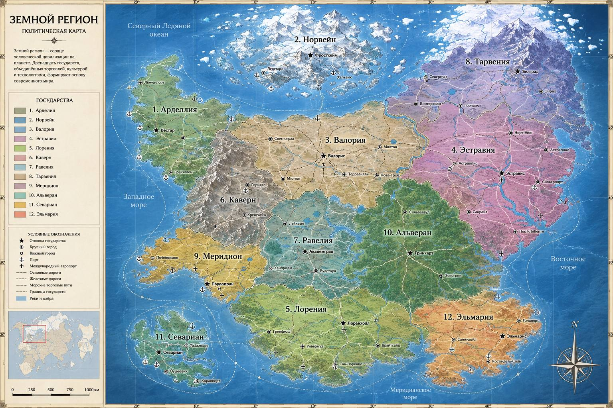
ЗЕМНАЯ ЧАСТЬ
Вексул
Вексул — земная часть планеты, на которой расположено 12 государств. Это современный регион с развитой цивилизацией, технологиями и различными культурами. Люди, живущие здесь, не знают о существовании других частей мира за Завесой.
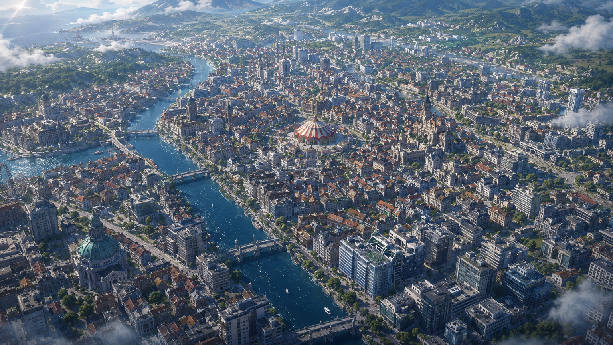
ГОСУДАРСТВО ВЕКСУЛА
Валория
Валория — развитое государство в центральной части региона. Известна высоким уровнем жизни, крупными городами, современной инфраструктурой и сильной экономикой.
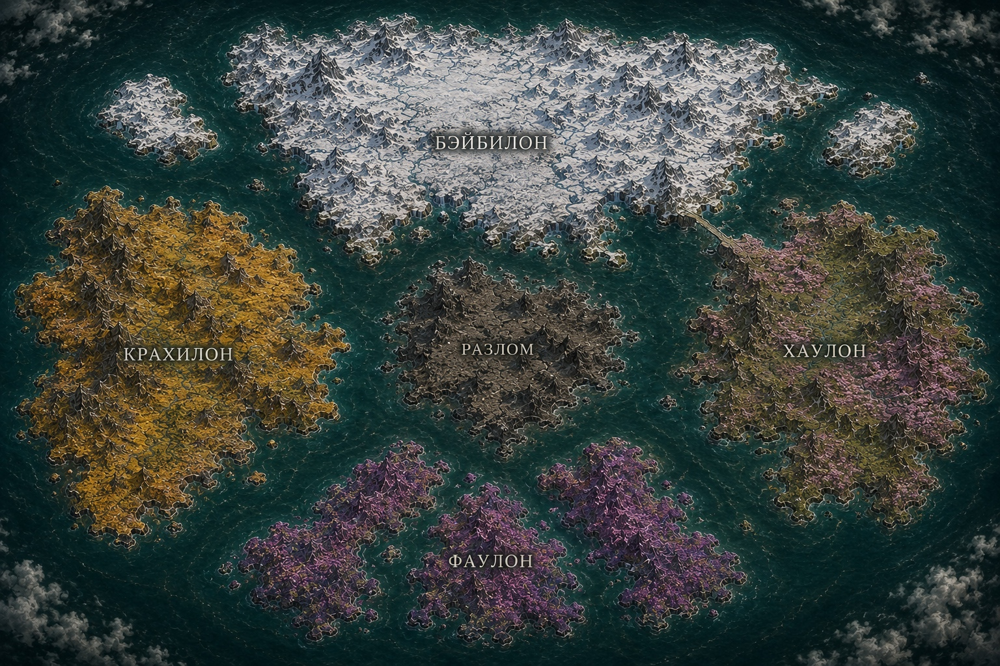
АСТРАЛЬНАЯ ЧАСТЬ
Диаспаро
Диаспаро — это астральная часть мира, населённая демонами. В отличие от Вексула и небесной части, известной как мир долгой жизни, Диаспаро является отдельной цивилизацией со своей историей, государствами и внутренними конфликтами.
На территории Диаспаро существуют четыре великих королевства: Бэйбилон, Фаулон, Хаулон и Крахилон. Несмотря на общее происхождение, каждое из них развивалось независимо друг от друга и сформировало собственный уклад.
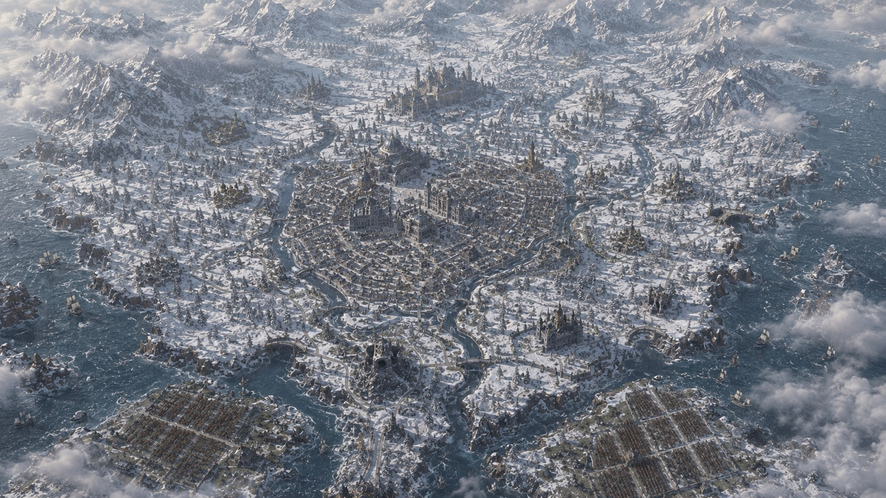
КОРОЛЕВСТВО
Бэйбилон
Бэйбилон является одним из древнейших королевств Диаспаро. На протяжении многих веков оно считалось главным центром влияния среди демонов. Однако его положение начало меняться после отделения Хаулона, который ранее являлся автономной областью Бэйбилона. Благодаря развитию торговли и более стабильной экономике Хаулон постепенно получил больше независимости и в итоге стал отдельным королевством.
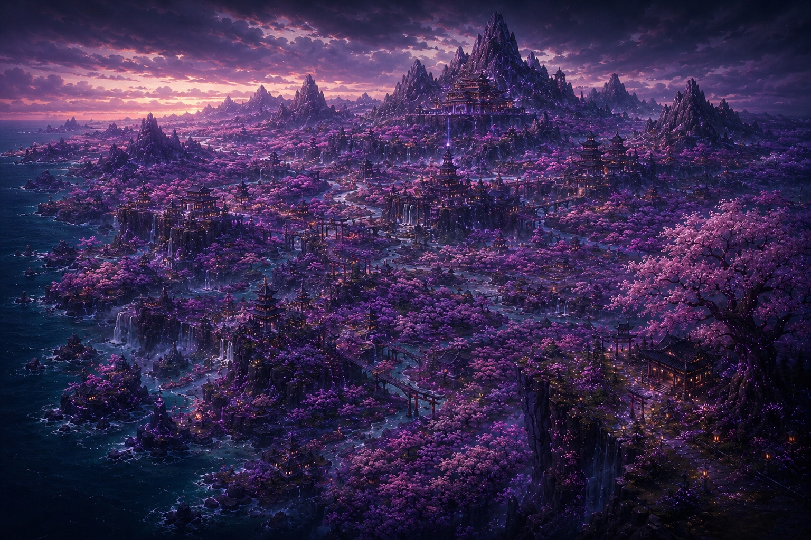
КОРОЛЕВСТВО
Фаулон
Фаулон долгое время сохраняет нейтральное положение среди остальных королевств. В отличие от Бэйбилона, Фаулон развивался через свободу взглядов и почтение культуры. Из-за этого между двумя королевствами часто возникают разногласия относительно будущего Диаспаро.
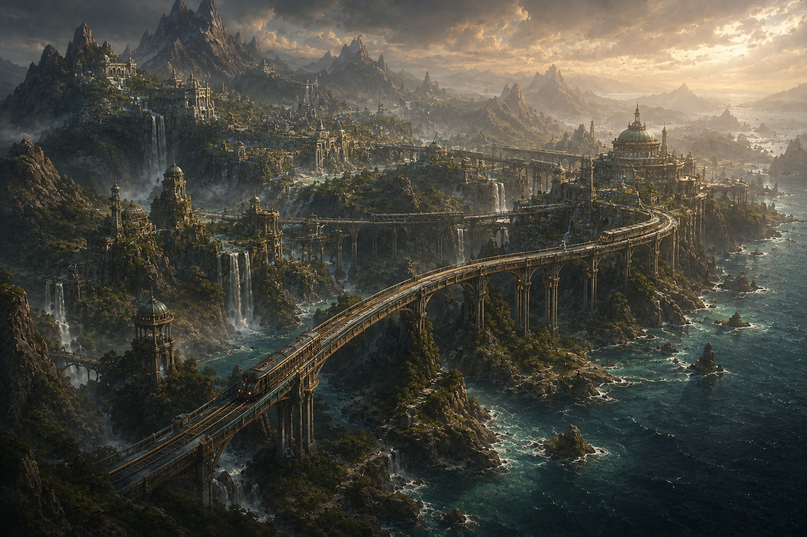
КОРОЛЕВСТВО
Хаулон
Хаулон является самым молодым из четырёх королевств. После получения независимости он быстро превратился в один из наиболее развитых регионов Диаспаро. Многие демоны переезжают туда в поисках новых возможностей, что постепенно изменяет его культуру и делает его самым многонациональным королевством.
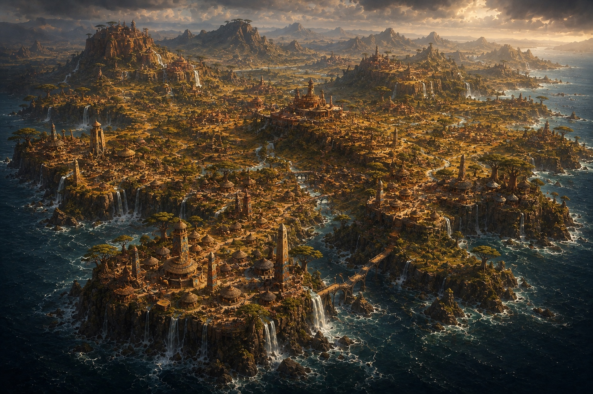
КОРОЛЕВСТВО
Крахилон
Крахилон остаётся самым закрытым королевством Диаспаро. В отличие от остальных территорий, оно редко участвует во внешних отношениях и сохраняет собственные древние традиции. Из-за этого о происходящем внутри Крахилона известно меньше всего.
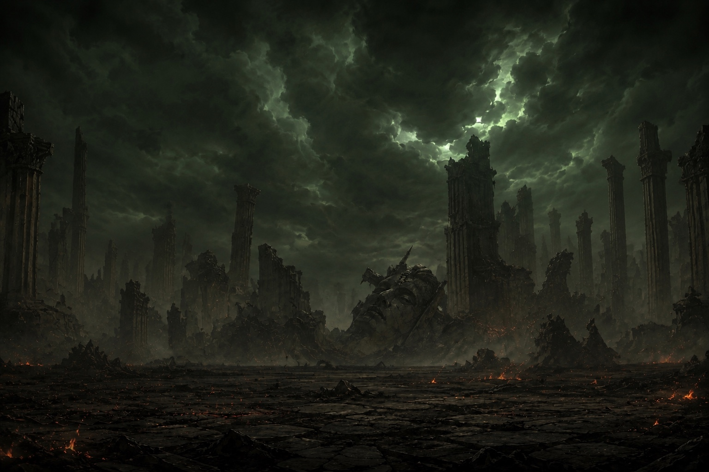
НЕЙТРАЛЬНАЯ ТЕРРИТОРИЯ
Разлом
В центре Диаспаро находится Разлом — территория, которая не принадлежит ни одному королевству. В нём обитают демоны, чьи разумы были изменены постоянной болью и страданиями. Все четыре королевства придерживаются разных взглядов на существование Разлома: одни считают его опасностью, другие — частью истории Диаспаро.
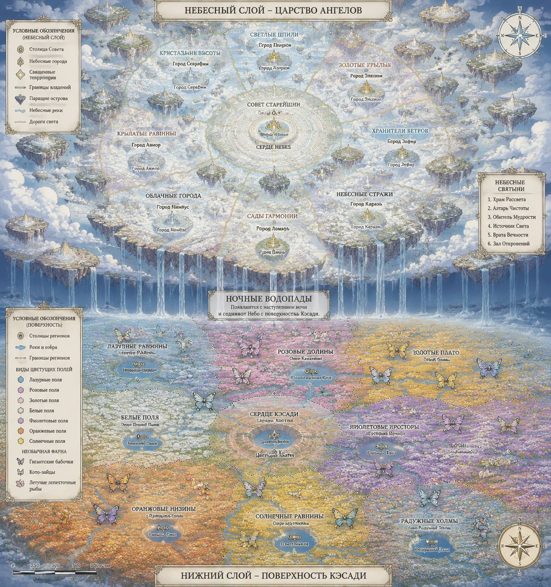
НЕБЕСНАЯ ЧАСТЬ
Кэсади
Для тех, кто живёт в небесной части, планета называется Кэсади.
Кэсади находится за Завесой, которая расположена высоко в небе. Однако при пересечении Завесы существо попадает не в пустоту и не в облака, а на полноценную планету.
Ангелы живут в небе, а не на поверхности земли. Подобно людям, они не могут жить в противоположной для себя среде: люди не способны находиться в небе без специальных условий, а ангелы не могут жить на земле Кэсади. Поэтому их царство расположено в небесах.
Кэсади является единым государством, которым управляет Совет старейшин ангелов.
Поверхность планеты покрыта огромным количеством цветов. В Кэсади не растут деревья, зато повсюду находятся цветочные поля и необычные растения. Цветы играют важную роль в существовании ангельской расы.
В Кэсади обитают уникальные существа. Среди них есть создания, наполовину похожие на зайцев и наполовину на котов, а также гигантские бабочки размером с человека и другие необычные формы жизни.
В этом мире никогда не бывает дождей. Однако ночью происходит уникальное явление: с небес начинают падать бесконечные водопады, которые соединяют небесную часть с поверхностью планеты.
Ангелы не умирают в привычном смысле. Когда их жизнь подходит к концу, они растворяются в семена цветов и разлетаются по миру. Из этих семян вырастают цветы. Когда цветы расцветают, живые ангелы создают из них новых ангелов. Именно поэтому в Кэсади существует огромное количество цветов — они являются не только частью природы, но и частью жизненного цикла ангелов.
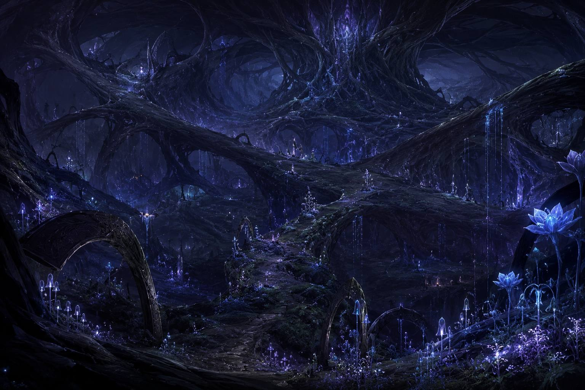
ПОДЗЕМНАЯ ЧАСТЬ
Кха-Кха
Для тех, кто живёт в подземной части, планета называется Кха-Кха.
Кха-Кха — это мир вечной ночи, в котором отсутствует привычное небо. Вместо него над миром возвышается огромное древнее дерево, настолько огромное, что его невозможно увидеть целиком. Его бесконечные корни простираются во всех направлениях, образуя весь ландшафт этого мира.
Кха-Кха не подчиняется привычным законам пространства и времени. Для каждого существа этот мир существует по-разному.
Если попасть в Кха-Кха сегодня, а затем вернуться через двадцать лет, можно оказаться в том же самом месте. Если пройти несколько километров в любом направлении, можно снова вернуться туда, откуда начал путь.
Фактически Кха-Кха представляет собой одну область размером около 300 метров, которая существует одновременно в бесконечном количестве вариантов. Для каждого существа этот мир выглядит одинаково, но является собственной, отдельной версией пространства.
По этой причине жители Кха-Кха не встречают друг друга случайно. Единственный способ встретить другое существо — знать его настоящее имя.
Настоящее имя является связью между существом и самим Кха-Кха. Если назвать настоящее имя, мир соединяет две отдельные версии пространства, позволяя существам встретиться.
Обновления проекта
Здесь будут анонсы глав, арты и материалы о создании вселенной.